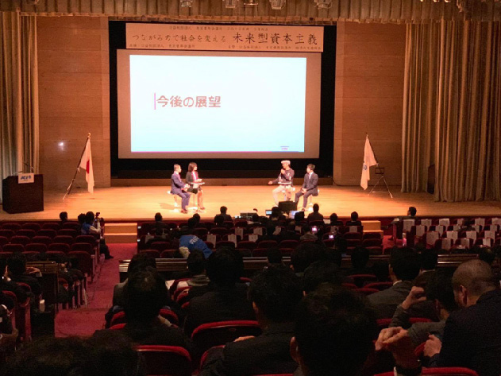

福祉業界とフランチャイズ業界のキーパーソン
藤田英明
が、
御社 の
顧問 に。
経営には、改革が必要だ。
今のままでは終われない。
次の一手を考えるとき、
従来の発想にとらわれない、新しく強い力が
御社の経営に必要ではありませんか。
経営においてはしばしば、大きな決断や方向転換をしなければならないときがあります。
事業が順調なときには、堅実に業務をこなす優秀な部下たちが頼りになります。ですが、嵐の中を大波にもまれながら進んでいかなくてはならないとき、本当に必要なのは安定を求める部下ではなく、みずからリスクを取り大きな一歩を踏み出せるイノベーターです。
ときには組織の外から、誰もが思いつかなかったような策を紡ぎ出してくれる存在が、御社を次のステージへと押し上げる起爆剤になるに違いありません。
異端の社会起業家、藤田英明。
福祉業界とフランチャイズ業界に
変革を起こし続けているキーパーソンが
もしも、御社のビジネスに携わったら。
「藤田英明の顧問サービス」は、社外顧問または社外取締役に藤田英明を入れることで、御社のビジネスに化学反応を起こすプロジェクトです。
組織活性化・チェーン展開・売上アップ・組織構築・新規事業開発・マーケティングオートメーション……。
これまで成し得なかった、大きなイノベーションが実現できます。
膝田英明は何を為したか?
日本No.1を2ブランドで達成。
ビジネスモデル創出と急成長を得意とする
トップイノベーター。
藤田英明の実績１：950 店舗
（2009年~2015年：株式会社日本介護福祉グループ）
藤田英明の実績2：779 店舗
（2018年〜2021年：株式会社アニスピホールディングス）
合計実績：1729 店舗
- ■ 幕末の英傑「藤田 東湖」の末裔
- ■ 内閣府規制改革委員会にて講演
- ■ 東京青年会議所にてパネラーとして登壇
- ■ 世界健康大会（台湾）にてメインスピーカーとして登壇
- ■ アルジャジーラ（アラビアを代表する放送局）にて出演
- ■ WBS（ワールドビジネスサテライト）他、TV・新聞・雑誌等メディアでの取材歴多数
- ▶ 藤田英明オンラインサロン
- ▶ YouTube「ひでっちの福祉経営チャンネル」
- 
【現職】
株式会社アニスピホールディングス（代表取締役）／社団法人全国障害福祉事業者連盟（理事長）／NPO法人いきば（理事長）／社団法人グラミン日本（アドバイザリーボードメンバー）／医療法人杏林会（理事）／社団法人サービス管理責任者協会（理事）／株式会社トリプルダブリュー（顧問）／株式会社東京社中（代表取締役）
出身：東京都 生年月日：1975年11月 学歴：明治学院大学社会学部社会福祉学科
【経歴】
22才（1998年）：明治学院大学社会学部社会福祉学科卒業
22才（1998年）：社会福祉法人に介護職兼生活相談員で就職
23才（1999年）：事務局長に就任
24才（2000年）：施設長・理事に就任
26才（2002年）：起業（混合介護で夜間対応型高齢者デイサービス）
29才（2005年）：夜間対応型デイサービスをフランチャイズ化し全国展開を開始
34才（2010年）：介護事業で台湾及び中国進出・全国通所介護事業者連絡会設立・テレ東WBS出演
35才（2011年）：日本全国に直営及びフランチャイズで950事業所展開（世界一の拠点数）・アルジャジーラ出演
36才（2012年）：内閣府規制改革会議参画・NHK出演
37才（2013年）：第一次安倍政権時に首相公邸で閣僚及び官僚対象に講演
40才（2016年）：株式会社アニスピホールディングス設立
41才（2017年）：厚生労働省福祉人材確保室長の武内氏と共著で「介護再編」出版
42才（2018年）：ペット共生型障害者グループホーム「わおん/にゃおん」のフランチャイズ展開開始
44才（2020年）：運動療法を主とした生活介護（障害者デイサービス）「ワーカウト」の運営をスタート
46才（2022年）：ペット共生型障害者グループホーム「わおん/にゃおん」779拠点運営中
【出版】
「図解でわかる介護保険ガイド」（アニモ出版）
「社会保障大国日本」（幻冬舎）
「介護再編」（Discover21）
【メディア出演】
NHKおはよう日本/NHK eテレ/経済界/コロンブス/週刊エコノミスト/テレ東WBS/日本経済新聞/読売新聞/J-WAVE/日経ヘルスケアなど多数
得意とする支援領域
- チェーン展開
- web マーケティング
- 経営層指導
- 営業戦略立案
- 新規事業開発
- 人事制度構築
- 経営計画策定
- 社内活性化
- WANTEDLY採用

顧問料
50 万円／月
※目安としては取締役会１回＋幹部会議１回参加
ご興味を持っていただけましたら、
まずは無料の初回面談をご予約ください。
※お受けできない場合もありますので予めご了承ください。
※オンライン面談は代表者の方に限定させていただきます。
（C) Hideaki Fujita All Rights Reserved.